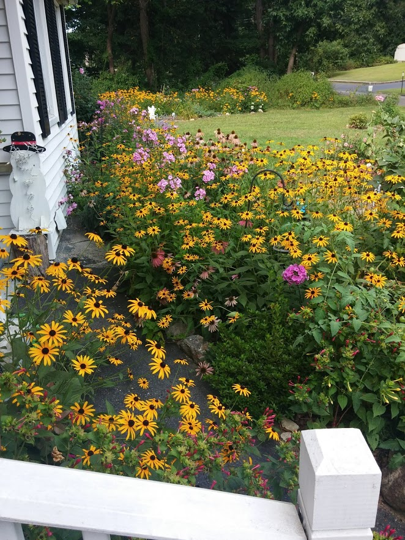
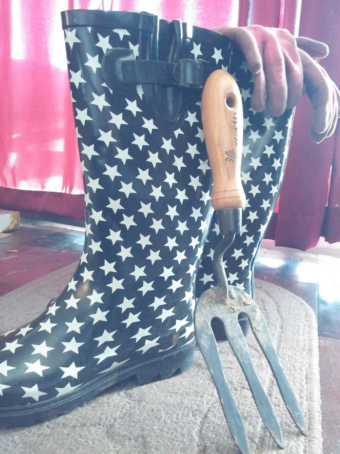

Let me tell you a little about me and why I think gardening not only helps with developing ideas but gives you a sense of peace and relaxation to take you through the day.
So after growing up on a farm and then doing the typical get married have children thing, I looked into changing careers and starting something new, coding! It is so far from what my current career is , an occupational therapy assistant, and also something I never would have thought I could do (although I get lots of help!). But here I am developing this site for others who hopefully can find some peace in their current or aspiring careers, through gardening.
A garden is a grand teacher. It teaches patience and careful watchfulness; it teaches industry and thrift; above all it teaches entire trust.
Many would say , I haven't the time , there is no room in my yard, I live in the city or I don't know anything about gardening.
Yes these are all valid, however I will argue that you can make time if you really want to. I have taken huge strides to change my daily routine in order to fit in time to learn coding and still work , take care of my gardens and find time for my family. It is the time you have wasted for your rose that makes your rose so important.
I like gardening. It’s a place where I find myself when I need to lose myself.
So what about having a small yard? Check out this site for some great ideas for container gardens for flowers that can still be cut for an indoor bouquet! or what about a Community Garden like this one in New York City?
There are no gardening mistakes, only experiments.
I am here to give you some places to find basic information to get you started. Additionally, some tools to help design simple gardens that you can pick a bouquet from and enjoy the season through. So grab some boots, gloves if you want and some basic garden tools and lets go play in the dirt!
May all your weeds be wildflowers.